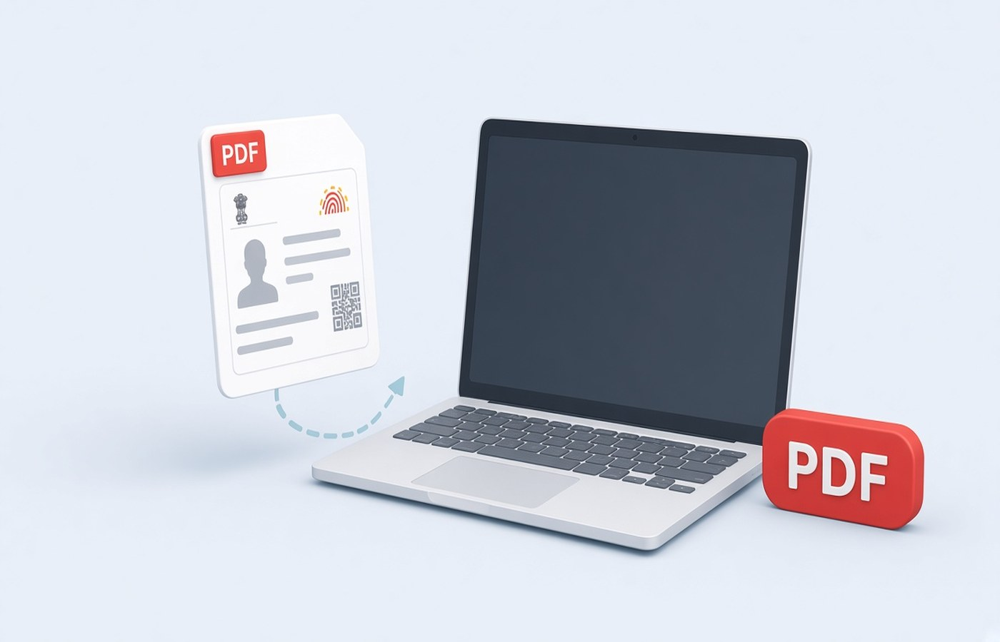

A government portal can accept the file size and still reject the upload because some pages are sideways. The message may say the document is unreadable, invalid, or not in the required orientation. That usually means a portrait pack with one or two landscape scans in the middle, or a phone photo saved on its side. Fix the turned pages on Windows, export a new PDF, and upload that file under a new name. Do not resend the same file and hope the checker changed its mind. You are correcting a scan you made. Do not rotate a page in order to hide a line of text.
Read the reject as an orientation problem
Download or reopen the exact file you uploaded, not a similar one from last week. Step through every page in a desktop viewer and note which pages require you to tilt your head. Those are the pages the portal flagged, even if the error text was vague. A cover page that is upright does not save a schedule that is rotated. Some portals render only the first page in the preview and still reject later pages in a server check. Look at the whole file. Write down the page numbers before you change anything.
Confirm you did not upload a JPG by mistake, or a PDF that is only a picture of a sideways monitor. The orientation fix applies to pages that are rotated inside the PDF. If the portal also complained about size or about a password, handle that separately. A password you do not know is not solved by rotating. Open locked files with the password the issuer already gave you. If you cannot, download a fresh copy from the official source.
- Open the same file the portal rejected
- Note every page that is not upright
- Ignore the cover if later pages are turned
- Treat size or password errors as a different fault
Rotate only the pages that are turned
Rotate a sideways page until the heading reads normally, then leave the upright pages alone. Rotating the whole PDF because one annexure was scanned wrong will turn the good pages into the new problem. Save a new file. Do not overwrite the rejected one until the portal accepts the replacement, because you may need to see what you sent. If a drawing is meant to be landscape, a true landscape page with the title readable is different from a portrait page that has the drawing lying on its side. Make the title readable without a twist.
After you rotate, check that you did not clip the edge. Some tools rotate and keep the old crop, so a line of text falls outside the page. Zoom to the corners. Seals and page numbers live there. If the scan itself was taken at a slant, rotation in 90-degree steps will not straighten a diagonal. Rescan that sheet. A small skew is a new photo. It is not a reason to warp the page until the text looks painted.
Re-export and upload a new file name
Save as a new name, with a version, such as Application-Pack-v2.pdf. Portals and browsers keep the previous upload in the session or in a cache, and choosing a file with the same name makes it unclear which bytes went up. Remove the old attachment from the form if the screen lets you, then attach the new PDF. Wait for the preview. If the preview still shows a sideways page, you attached the old file or you missed a page in the rotate step. Stop and check again.
Do not merge in extra documents during the same save. A rejected orientation fix should change orientation only, so you know what fixed the error. Adding a new certificate at the same time creates a second reason for a reject. If the portal wants a single PDF, you already have one. Export it again after the rotations. Open it once more from the folder you will browse to, not from a temporary viewer tab that might be the previous copy.
Keep the accepted file
When the portal accepts the upload, save that exact PDF next to the acknowledgement. A later query will ask for what you submitted, and the sideways original is the wrong answer. Pdf Buddy can rotate the bad pages and export the new PDF on the PC. You do not need a random website to turn a page. The portal that rejected you is the place you upload the fix, after the file is already correct locally.
If several pages were scanned in a rush, it is worth turning them all upright before the first upload next time. The reject costs a day. The check costs a few minutes. You are filing documents you are allowed to file. Rotation makes them readable. It does not change names, dates, or amounts. If a page is wrong in substance, replace it with a fresh official copy instead of turning it.
Questions people actually ask
The error does not say sideways, but the preview shows a turned page. Is that the cause? Treat a turned page as something you must fix even if the error text is vague. Upright the pages that need it, save a new file name, and upload that. If the portal still rejects it, read the new message. You have removed orientation as the unknown.
One annexure is a landscape drawing. Should I force it to portrait? Keep a real landscape page if the drawing's title reads correctly that way. What you should fix is a portrait scan that was saved on its side. Do not warp the drawing. Rotate in right angles, then check the corners.
I rotated the pages but the portal still shows the old file. What now? Remove the attachment, attach a PDF with a new name, and confirm the preview. Browsers reuse a same-named file from the last attempt. The copy on your PC should be the one you open from the folder before you browse to it again.
Upright the bad pages on the PC and upload a new file name. Pdf Buddy, by Easy Peeze Tools, is a Windows desktop PDF editor that works on the PC. The pack is not uploaded to a random website. The free tier is 2 files a day. Pricing starts at ₹149. Details: download.